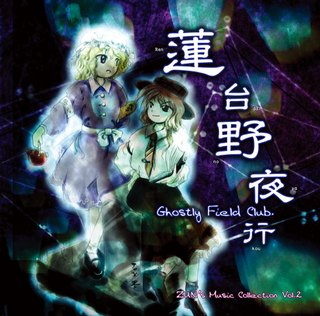
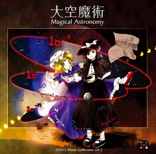

壹
弹幕射击游戏
东方系列的主体。从《东方红魔乡》到《东方锦上京》，共 15 部 Windows 整数作，每一部都有独立的故事、角色与系统。
进入分类 →Touhou Project
一个由 ZUN 独自创作的同人游戏系列。
弹幕、音乐、妖怪与少女，构成了一个名为「幻想乡」的世界。




东方Project（東方Project）是日本同人创作者 ZUN（太田顺也） 以社团「上海爱丽丝幻乐团」名义制作的系列作品。它始于 1996 年的 《东方灵异传》，最初只是 PC-98 平台上的几款弹幕射击游戏； 2002 年《东方红魔乡》登陆 Windows 后，系列迅速聚集起庞大的爱好者群体。
与商业游戏不同，东方几乎由 ZUN 一人完成企划、剧本、程序与全部音乐。 这种「个人创作」的气质，加上高自由度的二次创作规约， 让东方成为日本同人文化中最具代表性的作品之一。
故事发生在被结界与外界隔绝的「幻想乡」。那里居住着妖怪、妖精、神明与人类， 维持秩序的是博丽神社的巫女博丽灵梦和普通的魔法使 雾雨魔理沙。每当幻想乡出现异变，她们便出发调查， 一路击败形形色色的妖怪少女，最终查明幕后黑手。
游戏中的「异变」多以季节、月亮、花、信仰等自然与民俗题材为线索， 这也让东方带有浓厚的和风与神话色彩。
正作以「弹幕射击」（Danmaku Shooting）为核心：玩家操控自机在密集的弹幕间穿行， 用射击与 BOMB 击破 BOSS，同时收集分数道具。 BOSS 的每一招都有名字，称为符卡（Spell Card）， 名字本身就是剧情与角色性格的注脚。
音乐是东方的另一根支柱。每部作品的原声都由 ZUN 作曲， 旋律性强、辨识度高，后来衍生出规模巨大的同人音乐圈， 这也是东方生命力长久的重要原因。
东方常与「VOCALOID」「偶像大师」并称为日本网络同人文化的代表。 每年举办的「博丽神社例大祭」是规模最大的东方同人展会； 同人音乐、漫画、动画、游戏与 Cosplay 构成了庞大的二次创作生态， 在中国、欧美等地也拥有稳定的爱好者社群。
前三类是官方作品，「同人作品」一栏单独介绍二次创作，两类内容在页面上分开标注。
| 1996 | 《东方灵异传》发表，系列在 PC-98 上起步 |
| 2002 | 《东方红魔乡》登陆 Windows，系列迎来转折 |
| 2003 | 首张「秘封俱乐部」音乐 CD《莲台野夜行》发售 |
| 2005 | 《东方文花帖》等官方书籍开始陆续出版 |
| 2010s | 同人创作爆发，例大祭与二次创作形成庞大社群 |
| 2023 | 《东方兽王园》发售，系列仍在持续更新 |